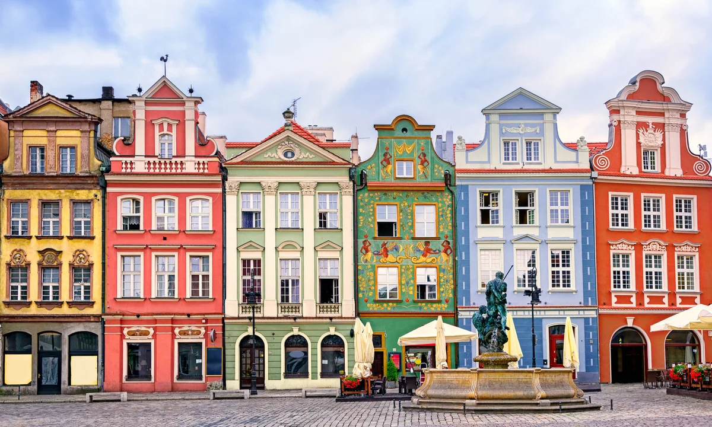

Місце народження: 3 грудня 2003 року, м. Миколаїв
Освіта: Миколаївська гімназія №3, м. Миколаїв
Національний технічний
університет України «Київський політехнічний інститут імені Ігоря
Сікорського», м. Київ
Хобі:
Улюблені фільми:
По́знань (пол. Poznań, лат. Posnania, нім. Posen) — місто на правах повіту в центральній частині західної Польщі, розташоване на Поозер'ї Великопольському, на річці Варта, в гирлі Цибіни. Історична столиця Великопольщі, від 1999 р. адміністративний центр Великопольського воєводства і познанського повіту.
